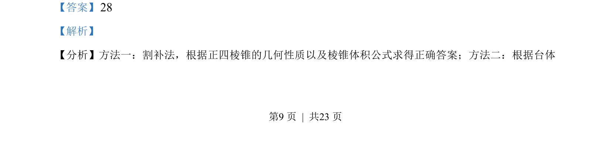
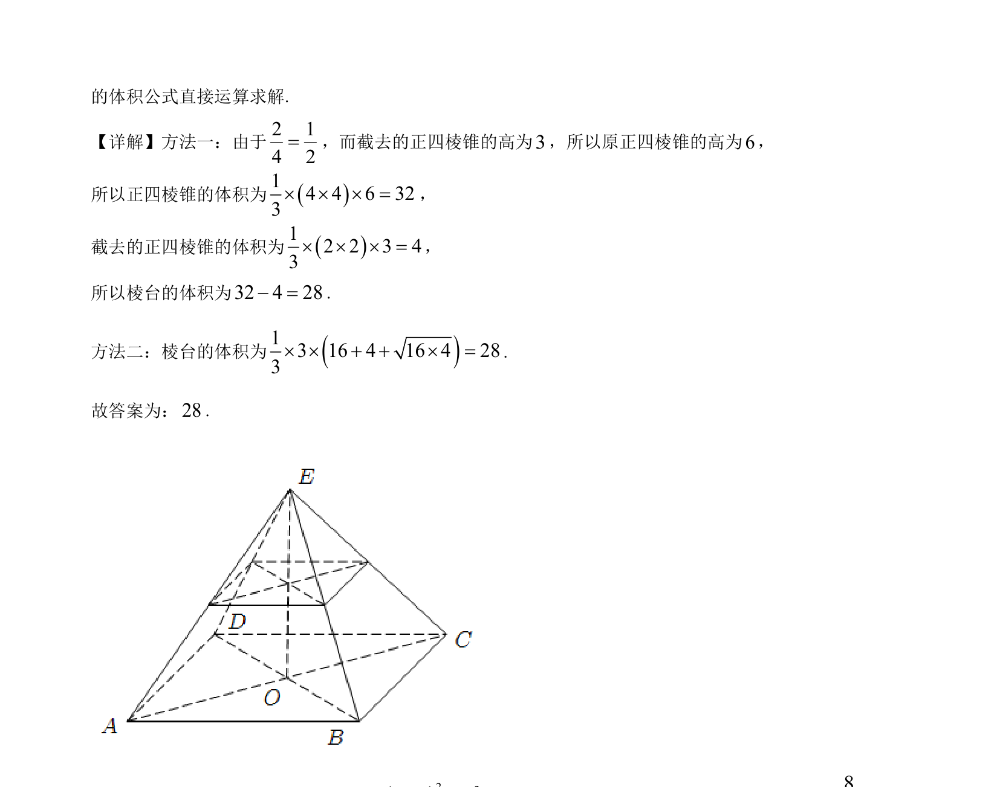

考点：棱台体积 正四棱锥 割补法
棱台体积
正四棱锥
割补法
利用割补法或台体体积公式求正四棱锥截得的棱台体积。


📄 原 PDF 第 9 页：素材/真题/吉林/2008-2024·（吉林）数学高考真题/2023年高考数学试卷（新课标Ⅱ卷）（解析卷）.pdf
素材/真题/吉林/2008-2024·（吉林）数学高考真题/2023年高考数学试卷（新课标Ⅱ卷）（解析卷）.pdf
【答案】28 【解析】 【分析】方法一：割补法，根据正四棱锥的几何性质以及棱锥体积公式求得正确答案；方法二：根据台体